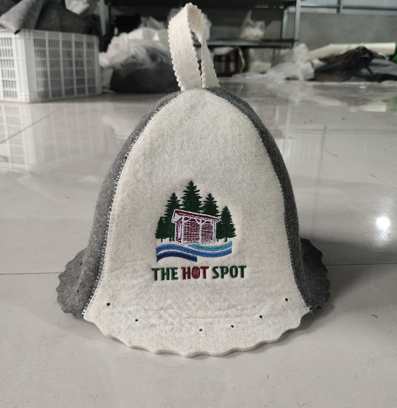
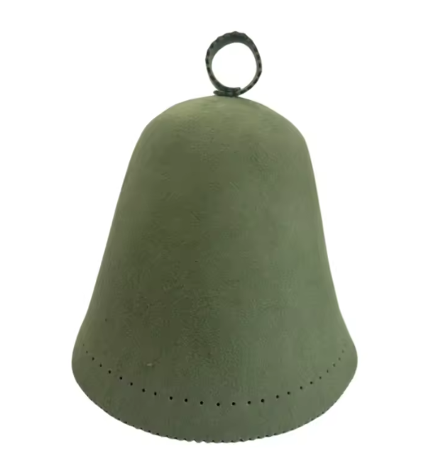

Sauna culture in Canada has exploded, from Nordic spas in Quebec and Ontario to bathhouses in Vancouver and wood-fired barrels by the river in the Sea to Sky. The rules aren't always posted, so here are the ones regulars follow without thinking about it.
Before you go in
1. Shower first
Rinse off before your first round. You're sharing benches, air and maybe a cold plunge with other people. If you only follow one rule, make it this one.
2. Bring a towel to sit on
Sit or lie on a towel so your sweat ends up on it rather than the wood. A long seat towel is ideal. Wood benches are porous, and the next person will thank you.
3. Leave the phone outside
Heat is bad for electronics, and nobody wants a camera in a room where people are half-dressed. Leave it in the change room or your bag.
In the sauna
4. Close the door quickly
Every second the door is open lets heat out. Step in, close it behind you, then find your spot.
5. Read the room on talking
Some saunas are silent, some are social. Nordic spas often ask for quiet; a backyard sauna with friends is the opposite. If you're not sure, keep your voice down and follow the regulars.
6. Ask before adding steam
In a sauna with stones and a ladle, throwing water on the rocks (löyly, as the Finns call the steam) is part of the joy. But a big pour makes the room much hotter, fast. A quick "mind if I add some steam?" is the polite move. Never pour water on an electric heater unless it's designed for it.
7. Higher benches are hotter
Heat rises, so the top bench can be dramatically hotter than the bottom one. If you're new, start low. Don't feel you have to tough it out on the top row.
8. Wear a sauna hat (a proper one)
Wool sauna hats are a normal sight in Finnish, Estonian and Russian saunas, and more and more Canadian regulars wear them too. Because the air at head height is the hottest in the room, a felted wool hat helps your head stay comfortable while your body heats up. It also protects your hair from drying out. Stick to natural wool or felt: a synthetic toque is not the same thing. Here's what we sell and here's a neutral guide to how they work.

9. Don't overstay for the sake of it
There's no prize for the longest round. Most people do somewhere around 8–15 minutes, then cool down. Get out if you feel dizzy or unwell, and check with your doctor first if you're pregnant or have a heart or blood pressure condition.
After your round
10. Rinse before the cold plunge
Shared plunge pools and tubs stay clean when everyone rinses the sweat off first. Then get in calmly. No cannonballs.
11. Take your rest seriously
The rest after the cold is half the experience. Sit down, breathe, drink water. In winter, a robe or warm layer and a pair of sandals make this far more pleasant.
12. Leave it how you found it
Take your towel, water bottle and anything else with you, and hang your hat to dry. At wood-fired saunas, don't fiddle with the fire unless it's yours to tend. It's a small thing that keeps sauna spaces welcoming for everyone.
Backyard and rental sauna etiquette
Private saunas have their own rules: ask the host about the fire, keep the noise down if there are neighbours, and pack out anything you bring. If you're renting a mobile sauna in the Sea to Sky, our friends at Squamish Saunas have a good first-timer's guide to wood-fired sauna and cold plunge.
Questions
Do you shower before a sauna?
Yes. Rinse off before your first round, and again before getting into a shared cold plunge. It's the most basic rule of sauna etiquette almost everywhere.
Can you talk in a sauna?
It depends on the sauna. Many Nordic spas are quiet zones, while community and backyard saunas are often social. Follow the signs, and if there are none, keep your voice low and match the room.
Is it rude to pour water on the sauna stones?
Not if the sauna is set up for it, but ask the room first. A quick 'mind if I add steam?' is standard. Never pour water on an electric heater that isn't designed for it.
Can you wear a hat in the sauna?
Yes, as long as it's a proper sauna hat made of wool or felt. They're common in Finnish, Russian and Baltic sauna culture and help keep your head comfortable. Avoid synthetic hats, which can get uncomfortably hot.
Shop wool sauna hats, shipped across Canada from Squamish.
Bucket, Belltop and 100% Merino. Free shipping on orders over $75.
More from the journal: 12 Sauna Gift Ideas for the Sauna Lover in Your Life · What's the Best Material for a Sauna Hat? · All posts